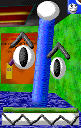
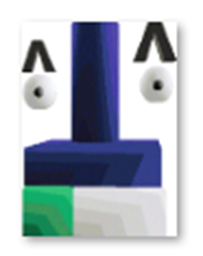
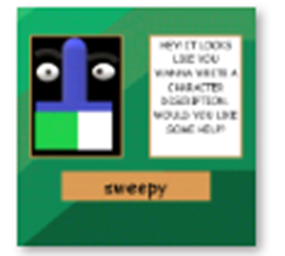
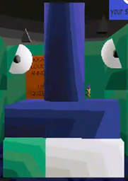
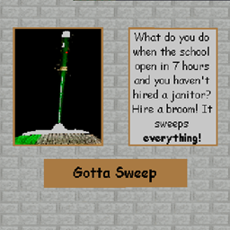
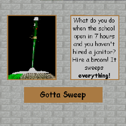
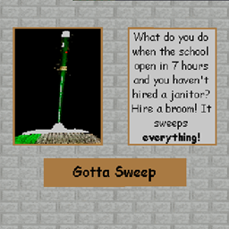

(Paint.net) Sweepit appears as a broom creature. He has a blue handle with a white tip, a green head, sharp white teeth in-place of bristles, and floating googly-eyes with thick ">" shaped eyebrows.
(Paint 3D/Fangame/3D Movie Maker) Sweepit appears as a broom creature. He has a thick blue handle, a blue head, green and white bristles, and floating googly-eyes with large "V" shaped eyebrows.
Gallery
Paint.net SIFWN

SIFWN Fangame


Paint 3D SIFWN

3D Movie Maker SIFWN

Trivia
Sweepit is a Clippy parody.
Sweepit did not get a design update in the Paint 3D version of SIFWN.
Sweepit is apparently a "Weird Creature" due to the fact he is allowed in the "no people that are not weird creatures ALLOWED!" rooms.
Sweepit loves helping people get around the school.
Sweepit uses He/It, hints why his name is Sweepit.
Sweepit gets along well with Mr. Smiles and Hunger Man, though tends to have problems with Sticky and Angery Student.
Sweepit's deadname is "Sweepy".
Poster Descriptions
Paint.net SIFWN
"hey! it seems you are trying to write a character description, would you like some help? it seems you are ripping me off would you like some help?"
Paint 3D/Fangame SIFWN
"HEY! IT LOOKS LIKE YOU WANNA WRITE A CHARACTER DISCRIPTION WOULD YOU LIKE SOME HELP?"
3D Movie Maker SIFWN
"What do you do when the school open in 7 hours and you haven't hired a janitor? Hire a broom! It sweeps everything!"


 
